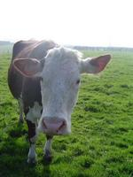
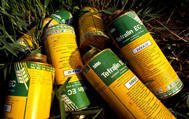
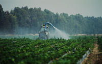
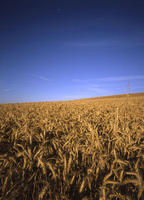
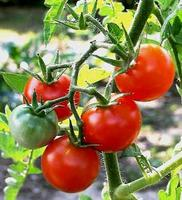

L’eau, touchée par de nombreuses pollutions (dû aux pesticides et aux nitrates), en est l’exemple phare : en France, 96% des cours d’eau et 61% des eaux souterraines mesurés par l’IFEN en 2004 étaient contaminés par des pesticides, et la moitié des cours d’eau présentaient des teneurs en nitrates supérieures aux normes.
La dégradation de la qualité des eaux prélevées pour l’eau potable peut même conduire à des abandons de captages (d'après le Rapport Miquel 2003). La Bretagne est emblématique à ce titre de l’impact d’une agriculture intensive sur les eaux de consommation.
|  | Mais beaucoup d’autres milieux sont victimes des pratiques agricoles intensives : les sols, soumis à l’érosion et à la perte de fertilité ; la biodiversité, avec la disparition considérable de plantes, d’oiseaux et d’abeilles dans les régions agricoles, mais aussi la standardisation des espèces cultivées (la FAO estime ainsi que, depuis le début du siècle, quelque 75% de la diversité génétique des plantes cultivées ont été perdus). Sans oublier la forte participation du secteur agroalimentaire au réchauffement climatique : l’agriculture représente près de 20% des émissions de gaz à effet de serre de la France. Mais si l’on inclut la fabrication des engrais azotés et le transport des marchandises, cette participation s’élève à 30%. Ce phénomène est par ailleurs accentué par la déforestation massive qui touche les forêts amazonienne et indonésienne dans les pays producteurs de soja et d’huile de palme (le soja étant destiné à nourrir les élevages européens, et l’huile de palme à produire des agrocarburants et à être utilisé dans les produits alimentaires transformés). N’oublions pas que la déforestation représente 20% des émissions mondiales de GES ! |
« Notre santé aussi est impactée »
Les agriculteurs sont en première ligne en raison de leur exposition particulièrement récurrente aux pesticides…
Selon de nombreuses études réalisées en France, ils constituent l’une des populations les plus touchées par certaines affections : troubles neurologiques (maladie de Parkinson…) et immunitaires, troubles de la fertilité, cancers… En outre, les résidus de ces pesticides peuvent ensuite subsister dans notre alimentation. Ainsi, 52% des fruits et légumes commercialisés en France en 2007 et analysés par la DGCCRF (Direction générale de la concurrence, de la consommation et de la répression des fraudes) en contiennent et 7,6% dans des proportions supérieures aux limites maximales autorisées. |
 |
De même, les conditions d’élevage hors-sol propices à favoriser certaines maladies animales, un recours plus systématique à des facteurs de croissance (antiobiotiques), les rejets organiques des élevages intensifs en grand nombre (qui provoquent l’excès de nitrates) et le recours croissant aux Organismes Génétiquement Modifiés (OGM), sont autant de risques potentiels pour la santé humaine.
« Le modèle agricole intensif est extrêmement coûteux »
Les dépenses publiques nécessaires pour remédier aux impacts environnementaux et sanitaires de l’agriculture intensive sont considérables : traitement de l'eau (2 milliards d'euros par an en France), dépenses de sécurité sociale... Le coût « externalisé » du modèle intensif actuel est largement négatif. D’autant qu’il est subventionné au détriment de modèles agricoles plus respectueux de l’environnement, générateurs de plus de lien social, de richesses et d’emplois.
 |
Mais aussi au détriment des pays du Sud, dont les marchés locaux sont déstructurés par l’importation de productions subventionnées à bas prix (poulets, blé…). Ce modèle intensif est en outre responsable de la dépendance économique de l’Europe vis-à-vis des importations de soja. Nécessaire à l’alimentation de ses élevages (4 millions de tonnes de soja importés chaque année), le soja importé en Europe aujourd’hui est majoritairement génétiquement modifié. |
« Mieux vaut prévenir que guérir ! », vieil adage de bon sens… Il est temps de repenser le modèle agricole dans son ensemble.
Des solutions existent déjà pour concilier la production agricole et la préservation des ressources naturelles, tout en favorisant l’équité sociale et la rentabilité économique du système agroalimentaire.
Cette agriculture n’est pas à inventer : elle est pratiquée dans toute l’Europe par des agriculteurs soucieux de leur environnement, du dynamisme de leur territoire, et de leur qualité de vie (agriculture biologique, production fruitière intégrée, élevage herbager, etc.).
|  | Elle remet l’homme et la nature au cœur du dispositif de production et non la chimie ; elle place l’autonomie financière, l’autonomie de ses intrants (engrais organiques, aliments pour animaux) et le non recours au pesticides au cœur de ses préoccupations. De la production à la consommation, ces agricultures durables et responsables remettent en cause les pratiques actuelles en cherchant à s’affranchir le plus possible des produits extérieurs (tels que les pesticides, l’eau, les engrais de synthèse, l’énergie, les compléments alimentaires pour les animaux…) et en privilégiant la commercialisation locale des produits. Pour les consommateurs, favoriser ces agricultures c’est donc aussi privilégier les produits locaux et de saison. Ils peuvent aussi préférer des produits de qualité, en choisissant des produits labellisés (AB, écolabel biologique européen, label rouge, AOC…) ou, s’il n’y en a pas, en s’intéressant aux pratiques des producteurs. |
Le WWF-France agit à plusieurs niveaux afin, à la fois, de faire connaître les pratiques agricoles responsables, et de faire évoluer certains secteurs vers de meilleures pratiques.
L’ONG s’appuie notamment sur un vaste réseau d’agriculteurs français, regroupés au sein des Centres d’initiatives pour valoriser l’agriculture et le milieu rural (CIVAM). Ces agriculteurs, dont certains sont certifiés bio, expérimentent des pratiques de production plus économes (moins de pesticides et d’engrais, moins d’énergie…) et des modes de commercialisation plus proches des consommateurs (vente à la ferme, AMAP, restauration collective…). Cette agriculture, qui n’est pas favorisée par les politiques agricoles, démontre pourtant sa pertinence au niveau environnemental bien sûr, mais aussi au niveau du revenu des agriculteurs eux-mêmes, et de l’emploi en milieu rural.
C’est donc, entre autres, à partir de l’expérience de ces agriculteurs responsables que Le WWF agit pour faire évoluer les politiques publiques…
|  | L’une des clés de voûte de la réorientation du modèle agricole actuel est la Politique agricole commune (PAC). Mise en place par l’Union européenne au sortir de la seconde guerre mondiale afin d’assurer l’autosuffisance alimentaire de l’Europe, cette politique a poussé à une forte augmentation de la productivité agricole, et donc à la généralisation des pratiques dites intensives. Des améliorations ont eu lieu au fil des réformes, notamment dans le but de limiter la surproduction de certains produits et de conditionner les subventions agricoles à certaines exigences environnementales. Par les aides financières qu’elle distribue et les réglementations qu’elle impose aux agriculteurs européens, la PAC a en effet les moyens de favoriser des pratiques plus ou moins vertueuses. C’est pourquoi Le WWF et de nombreuses ONG en Europe agissent dès à présent pour que la prochaine réforme de la PAC, en 2013, aille beaucoup plus loin en rémunérant les services environnementaux et sociaux rendus par l’agriculture, tels que la préservation de la ressource en eau, la séquestration du carbone par les prairies, l’emploi en milieu rural, etc. |
Pour en savoir plus :
Sur les pesticides : www.mdrgf.org
Sur les actions du WWF-France sur le soja et l’huile de palme : www.protegelaforet.com
Sur l’agriculture biologique : www.fnab.org (site des agriculteurs bio) et www.agencebio.org
Sur les actions des CIVAM : www.civam.org